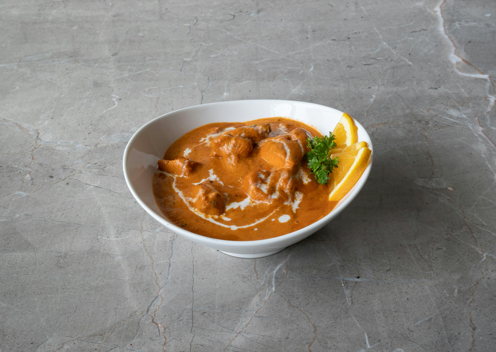

Home
Indian Butter Chicken

This indian butter chicken recipe, or Chicken Makhani is a popular indian dish that features a full-flavored sauce that compliments the chicken deliciously. It can be adjusted to be as spicy or mild as you prefer.
Served alongside Basmati Rice and Naan bread.
What you will need:
- Large saucepan
- Large, heavy skillet
Ingredients:
- 2 tablespoons penut oil, divided
- 1 shallot, finely chopped
- 1/4 white onion, chopped
- 2 tablespoons butter
- 1 tablespoon ginger garlic paste
- 2 teaspoons lemon juice
- 2 teaspoons garam masala, divided
- 1 teaspoon chili powder
- 1 teaspoon ground cumin
- 1 bay leaf
- 1 cup tomato puree
- 1 cup half-and-half
- 1/4 plain yogurt
- 1 pinch salt and ground black pepper to taste
- 1 pound bonless, skinless chicken thighs, cut into bite sized pieces
- 1/4 teaspoon cayenne pepper, or to taste
- 1 tablespoon cornstartch
- 1/4 cup water